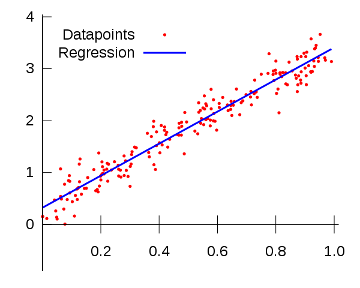

> Machine Learning
Created by Joanne Lee|
DIRECTORY
General Information

What is Machine Learning?
Machine learning refers to a subfield of computer science and artificial intelligence (AI) in which machines are gradually taught to perform tasks effectively without receiving explicit instructions through programming. As the name suggests, this technology focuses on the improvement of a machine’s accuracy and capabilities through experience, similarly to how a child may learn over time. Essentially, machine learning allows computers to gain knowlege in a manner comparable to the development of human intelligence.
> Machine learning algorithm: coded procedure that is run on data; creates a machine learning model
> Machine learning model: where output of the algorithm is stored; represents what the machine learned
History of Machine
Learning|
...
The term “machine learning” is considered to have been coined by Arthur Samuel, an American computer scientist and pioneer in the fields of digital gaming and AI in the mid-20th century. While creating a checkers game program in the 1950s, Samuel developed a self-updating method for the program to estimate the chances of either side winning (using a scoring function based on the positions of the pieces) and to determine its next move. He continued improving upon this design and eventually taught the program to recognize and remember previous positions it had already seen, increasing its effectiveness as a formidable opponent. Later in the same decade, American psychologist Frank Rosenblatt expanded upon Samuel’s accomplishments in machine learning and developed the Mark I perceptron, arguably the first modern neural network intended for accurate image recognition (though its true accuracy at the time is debatable). The minimax algorithm, alpha-beta pruning, and perceptron algorithm were AI and machine approaches used by Samuel and Rosenblatt in their respective endeavors, and their work, although seemingly trivial compared to the accomplishments of today, were highly influential in the early days of machine learning and undoubtedly paved the way for future progress.
Connection to Statistics
Although there are definitely differences between the fields of statistics and machine learning, the latter is evidently built upon the former. Often, an important component of machine learning projects is the machine’s ability to make accurate predictions using data gained over time. Statistical concepts such as linear regression will likely be encountered in methods designed to fulfill the task of predictive modeling, with math-based algorithms trained to help the machine make classifications or predictions about future outcomes. More specifically, one framework for machine learning is statistical learning theory, which is concerned with probability theory. Probability spaces - denoted by (Ω, F, P), or (sample space, set of events each containing a set of outcomes, function from events to probabilities) - as well as other probability topics such as random variables and conditional distributions are essential to understand for machine learning, as decisions must be made using incomplete information and thus levels of certainty or uncertainty must be measured. Overall, machine learning definitely requires an understanding of statistics and involves a considerable amount of math in general.

> Statistical method - linear regression